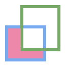
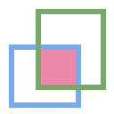
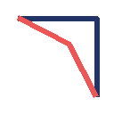
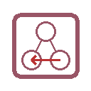
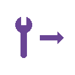

MakerVR Cheat Sheet
| Category | Name / User Guide Link |
Radial Menu Icon | Description | Keyboard Shortcut | Controller Shortcut |
|---|---|---|---|---|---|
| Basics | Copy |  |
Copy all selected models to the clipboard | <Ctrl>C | |
| Basics | Cut |  |
Cut all selected models to the clipboard | <Ctrl>X | |
| Basics | Delete | Delete all selected models | Backspace | ||
| Basics | Paste |  |
Paste all models from the clipboard | <Ctrl>V | |
| Basics | PasteInto | Paste all models from the clipboard as children of the selected model | <Shift><Ctrl>V | ||
| Basics | Quit |  |
Exit the application | <Ctrl>Q | |
| Basics | Redo | Redo the last undone command | <Ctrl>Y | ||
| Basics | Undo | Undo the last command | <Ctrl>Z | ||
| Combination | CombineCSGDifference |  | Create a CSG Difference from selected objects | Minus | |
| Combination | CombineCSGIntersection |  | Create a CSG Intersection from selected objects | <Shift>Alpha7 | |
| Combination | CombineCSGUnion |  |
Create a CSG Union from selected objects | <Shift>Backslash | |
| Combination | CombineHull |  |
Create a model that is the convex hull of selected models | ||
| Conversion | ConvertBevel |  | Convert selected models to beveled models | ||
| Conversion | ConvertClip |  |
Convert selected models to clipped models | ||
| Conversion | ConvertMirror |  |
Convert selected models to mirrored models | ||
| Creation | CreateBox | Create a primitive Box model | |||
| Creation | CreateCylinder |  |
Create a primitive Cylinder model | ||
| Creation | CreateRevSurf | Create a model that is a surface of revolution | |||
| Creation | CreateSphere |  |
Create a primitive Sphere model | ||
| Creation | CreateText | Create a 3D Text model | |||
| Creation | CreateTorus | Create a primitive Torus model | |||
| Creation | ImportModel |  |
Import a model from a file | <Ctrl>I | |
| File | OpenHelpPanel | Open the panel to access help | <Shift>Slash, F1 | ||
| File | OpenInfoPanel | Open the panel to show information about selected models | <Shift><Ctrl>I | ||
| File | OpenSessionPanel |  |
Open the panel to save or open session files | <Ctrl>S | |
| File | OpenSettingsPanel |  |
Edit application settings | <Ctrl>P | |
| Layout | LinearLayout |  |
Lay out the centers of the selected models along a line using the edge target | ||
| Layout | RadialLayout |  |
Lay out selected models along a circular arc | ||
| Layout | ToggleAxisAligned |  |
TOGGLE: Transform models in local or global coordinates | ||
| Layout | ToggleEdgeTarget |  |
TOGGLE: Activate or deactivate the edge target | ||
| Layout | TogglePointTarget | TOGGLE: Activate or deactivate the point target | |||
| Modification | DecreaseComplexity |  |
Decrease the complexity of the selected models by .05 | <Shift>Comma | |
| Modification | EditName | Edit the name of the primary selection | <Ctrl>N | ||
| Modification | IncreaseComplexity |  |
Increase the complexity of the selected models by .05 | <Shift>Period | |
| Modification | MoveNext |  |
Move the selected model down in the order | ||
| Modification | MovePrevious | Move the selected model up in the order | |||
| Modification | MoveToOrigin |  |
Move the primary selection to the origin | Equals | |
| None | None |  |
|||
| Precision | DecreasePrecision | Decrease the current precision | Z | Down | |
| Precision | IncreasePrecision |  |
Increase the current precision | X | Up |
| RadialMenu | ToggleLeftRadialMenu |  |
Show or hide the left radial menu | <Alt>L | Menu |
| RadialMenu | ToggleRightRadialMenu | Show or hide the right radial menu | <Alt>R | ||
| Selection | SelectAll |  |
Select all top-level models | <Ctrl>A | |
| Selection | SelectFirstChild |  |
Select the first child of the primary selection | <Ctrl>DownArrow | |
| Selection | SelectNextSibling |  |
Select the next sibling of the primary selection | <Ctrl>RightArrow | |
| Selection | SelectNone | Deselect all selected models | <Shift><Ctrl>A | ||
| Selection | SelectParent | Select the parent of the primary selection | <Ctrl>UpArrow | ||
| Selection | SelectPreviousSibling |  | Select the previous sibling of the primary selection | <Ctrl>LeftArrow | |
| Specialized | ToggleSpecializedTool | Switch between the current general tool and the specialized tool for the selected models | Space | Center | |
| Tools | ColorTool |  |
Edit the color of the selected models | ||
| Tools | ComplexityTool | Edit the complexity of the selected models | |||
| Tools | RotationTool | Rotate the selected models (Alt for in-place) | |||
| Tools | ScaleTool |  |
Change the size of the selected models (Alt for symmetric) | ||
| Tools | SwitchToNextTool |  | Switch to the next general tool | RightBracket | Right |
| Tools | SwitchToPreviousTool |  |
Switch to the previous general tool | LeftBracket | Left |
| Tools | TranslationTool | Change the position of the selected models | |||
| Viewing | HideSelected | Hide selected top-level models | <Ctrl>H | ||
| Viewing | InspectSelection | Inspect the current primary selection | <Ctrl>T | ||
| Viewing | ShowAll |  |
Show all hidden top-level models | <Shift><Ctrl>H | |
| Viewing | ToggleBuildVolume |  |
TOGGLE: Show or hide the translucent build volume | <Ctrl>B | |
| Viewing | ToggleShowEdges |  |
TOGGLE: Show or hide edges on all models | <Ctrl>E |